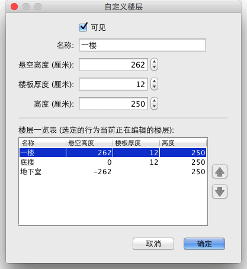

双击该楼层按钮您可以编辑该楼层名称、楼高、高程高度的30度对选项卡，或选择平面图→修改楼层...来自功能选单。 修改窗格中的一个楼层允许您编辑其属性，所选择当前编辑的楼层，也可以显示表格描述所有房子的楼层

地板厚度适用于计算 3D 视图中的某个楼层的楼层边框。这种表面可见周围在地板和夹层或阳台的边框。 高程可以是正数或负数。在以后的情况下，每次增加地下层将自动使对象、房间或封闭的墙被增加到地下层 3D 视图中。可以使用此功能，在地上放置一个游泳池，或创建一个或多个楼层的地下室。
•
在平面图顶部的选项中有相同的楼层高程，在列举各楼层总表中显示其高程，按楼层的名称。使用表的右侧箭头更改的编辑楼层外观的顺序。依照更改高程和 (或) 的楼层外观的顺序会自动更新选项卡的顺序